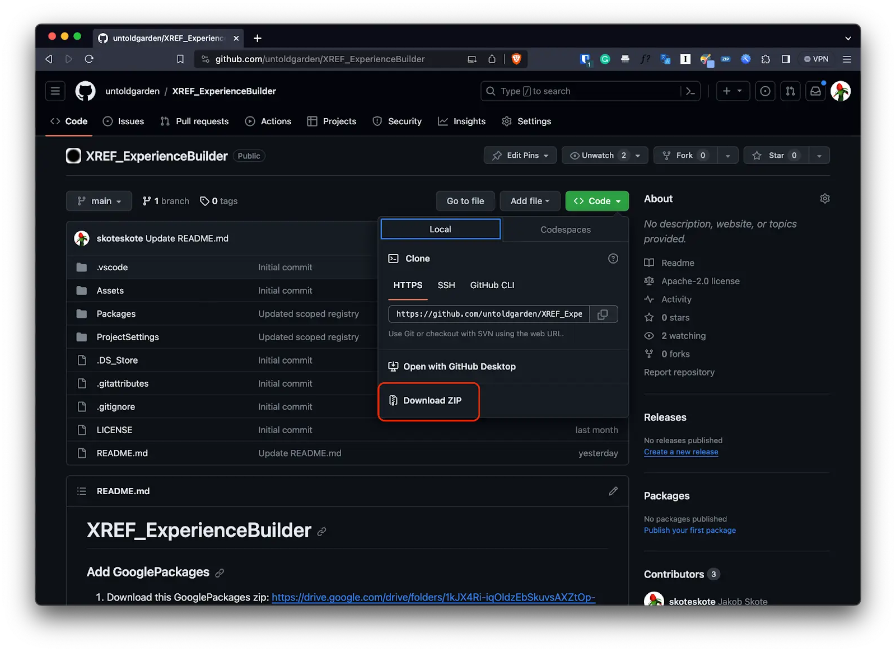
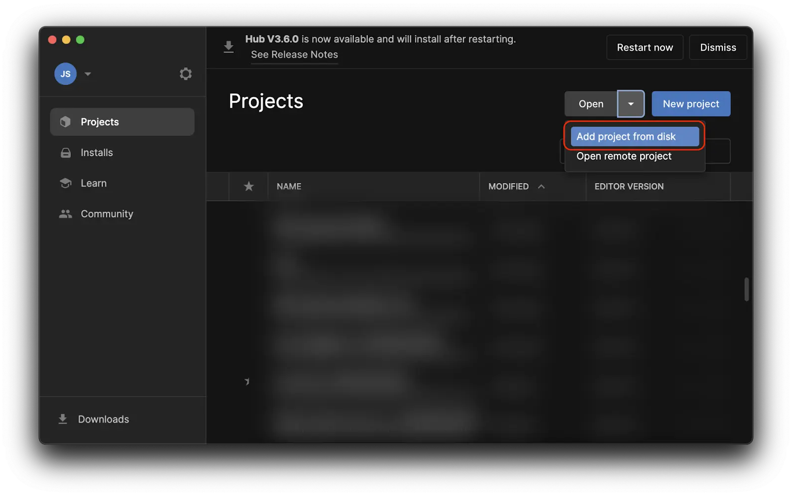
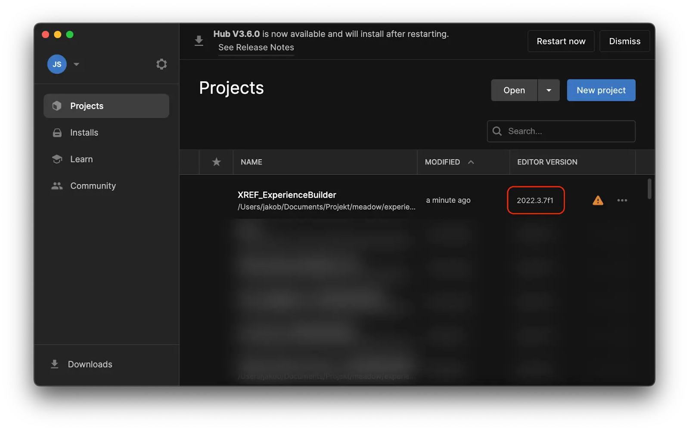

Download and install the template project for Unity
To create and publish your experiences to meadow you need to install Meadow Studio and the two XREF packages in your project. To make it easier to get started we have created a template project that has everything already installed.
Download the template project from Github
Via the Github website:
- Go to https://github.com/untoldgarden/XREF_ExperienceBuilder.
- Click the green “Code” button and press download zip. 
- Unzip it in a sensible location (e.g.
Projects/UnityTutorial).
Via the command line:
- Open your terminal or command prompt.
cdto the directory where you want to download the project.- Run the following command to clone the repository:
git clone https://github.com/untoldgarden/XREF_ExperienceBuilder
Add the template project to Unity Hub
- Go to Unity Hub.
- Click “Projects.”
- Click on the little arrow to the right of “Add” and choose “Add project from disk”. 
- Navigate to where you cloned your project template.
- Choose the root folder (e.g.
XREF_ExperienceBuilder). - Press “Add Project.”
- If you installed a different version than 2023.2.20f1 you need to tell Unity that you want to use that version instead.
- Press the drop down under “Editor version” that has a little warning triangle next to it. .
- Select your installed version of Unity.
- Press “Open with…”
- In the following dialogue, press “Change version.”
- It will take some time to open the project, and then show a new dialogue, press “Continue.”
- The project should open in Unity and look like this: